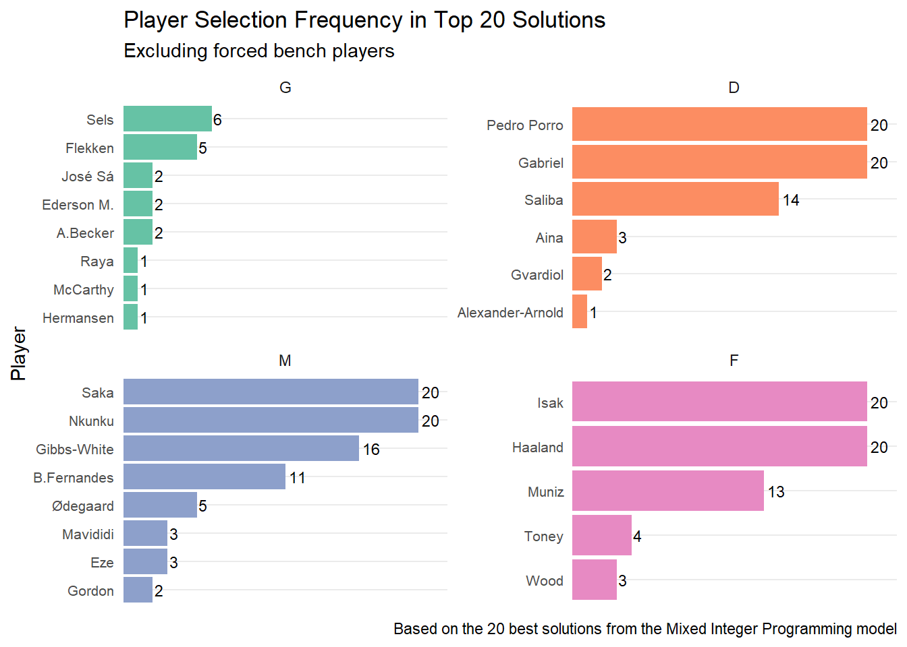

![]()
# so I can convert the position into a factor column
custom_order = c("G", "D", "M", "F")
# reading the data, creating the expected points based on the next three game weeks, cleaning variable names and introducing a player index that will be used in the optimization model to pick players who belong to certain positions and teams
fpl_review = readr::read_csv("data/fplreview_1723807857.csv") |>
dplyr::mutate(expected_points = `1_Pts` + `2_Pts` + `3_Pts`) |>
dplyr::rename(web_name = Name, name = Team, cost = SV) |>
janitor::clean_names() |>
dplyr::mutate(
player_index = dplyr::row_number(),
pos = factor(pos, levels = custom_order)
)Fantasy Premier League: Team Selection for Week 01
Utilizing FPL Review Data and MIP
1 Objectives of this Document
This document presents an optimization model for Fantasy Premier League (FPL) team selection, utilizing point projection data from the FPL Review Site. The analysis aims to maximize expected points by selecting an optimal squad of 15 players, including an efficiently chosen captain, while adhering to FPL budget and team composition rules.
2 Reading FPL Review’s Data
For simplicity, I will be reading the data from the FPL Review Site. The data was downloaded on August 16, 2024 at 7:30 AM Eastern U.S. time using the download data (CSV) from the bottom of the page. Note that this data is available for subscribers only (at $4/month).
3 A Simple Mixed Integer Programming Model
3.1 Assumptions
- The data sourced from the FPL Review Site is assumed to be of reasonable accuracy.
- I am currently optimizing the team based on the expected performance for Gameweeks 1-3. Obviously, I can make changes in the future to account for specific matchups but given that this is Gameweek 1 (i.e., I will only have 2 free transfers in the upcoming gameweeks and injuries/red cards can happen, I am trying to put a team that can hold its own over the next three weeks).
- Based on point 2, the model does not account for future transfers or chips.
- I am assuming that the expected points account for the player’s potential usage and injury status.
- For the next three game weeks, I want to have the following four players on my bench. With the exception of Fabianski, these are starters with low (or minimal) positional cost:
-
Fabianski - I wanted a 4.0 GK and I did not want to pick the most commonly chosen 4.0 GKP since I do not think he will be playing much. He was benched at the end of the season and did not play again.
-
Barco, as he will start as a LB for Brighton. So he will be picking some decent points in the begining of the season.
- Faes, as he is a sure-fire starter for Leicester. They will likely be a bit better than Southampton.
- Rogers, I believe he will be the best 5.0 MID in the game based on the preseason he had. He will be in my starting 11 in some game weeks and will be the first player off the bench in most game weeks. He is also owned by only 8.5% of the FPL community so has the potential for an increase in price.
-
Fabianski - I wanted a 4.0 GK and I did not want to pick the most commonly chosen 4.0 GKP since I do not think he will be playing much. He was benched at the end of the season and did not play again.
3.2 Plain English Explanation of the Model
The optimization model aims to select a team of 15 players for Fantasy Premier League, maximizing the total expected points while adhering to various constraints. Here’s a breakdown of the model:
The objective is to maximize the total expected points, including doubled points for the selected captain. Note that in the formulation, I have the total points of all 15 players and therefore, I subtract the points by the bench as they will not be in the team (and I am not doing a bench boost in any of these game weeks). This is subject to the following constraints (so that we do not only pick the best players from the game):
- The model must select exactly 15 players, with specific positions: 2 goalkeepers, 5 defenders, 5 midfielders, and 3 forwards.
- One player must be selected as the captain, whose points are doubled.
- The captain must be one of the selected players and cannot be a bench player.
- Specific bench players are required to be selected. This is something that I want, not required by the game. It also has the advantage that allows you to see the potential of your starting lineup since the bench will never change.
- I do not trust Pep (he rotates too much) so I will not select more more than two players from Manchester City.
- The total cost of the selected players must not exceed 100 million.
- No more than three players can be selected from any single team (except Man City where I artificially limit that to two).
- The model includes constraints to generate multiple unique solutions in subsequent iterations, as I want to identify the 20 best possible lineups.
This formulation allows for the simultaneous selection of players and the captain, ensuring that high-value players are considered for both roles in the optimization process.
3.3 Mathematical Formulation of the Model
3.3.1 Decision Variables
-
\(x_i\): Binary variable, equals 1 if player \(i\) is selected, 0 otherwise.
- \(y_i\): Binary variable, equals 1 if player \(i\) is selected as captain, 0 otherwise. This used to double the captain’s points so that premimum players make sense to be included in the mathematical model.
3.3.2 Objective Function
Maximize the total expected points, including doubled points for the captain: \[ \text{Maximize } \sum_{i=1}^{n} \text{expected_points}_i \cdot (x_i + y_i) - \sum_{i \ \in \text{ bench\_players}} \text{expected\_points}_i \]
3.3.3 Constraints
Squad Size: \(\sum_{i=1}^{n} x_i = 15\)
Captain Selection: \(\sum_{i=1}^{n} y_i = 1\)
Captain Must Be Selected: \(y_i \leq x_i, \quad \forall i \in {1,\ldots,n}\)
Captain Cannot Be a Bench Player: \(\sum_{i \in \text{bench\_players}} y_i = 0\).
Note that this is technically redudant since this cannot be possible from the maximization function in the objective function, but I am making it explicit for the readers sake.Inclusion of Specific Bench Players: \(x_i = 1, \quad \forall i \in \text{bench\_players}\).
Manchester City Player Limit: \(\sum_{i \in \text{Man City}} x_i \leq 2.\) Note that this may not be the optimal approach, but this is part of the strategy that I will be adopting.
Positional Constraints: \[ \sum_{i \in \text{GKP}} x_i = 2 \] \[ \sum_{i \in \text{DEF}} x_i = 5 \] \[ \sum_{i \in \text{MID}} x_i = 5 \] \[ \sum_{i \in \text{FWD}} x_i = 3 \]
Budget Constraint: \[\sum_{i=1}^{n} \text{cost}_i \cdot x_i \leq 100\]
Team Constraint: \[\sum_{i \in \text{Team}_j} x_i \leq 3, \quad \forall \text{ teams } j\]
Infeasibility Constraint for Iterative Solutions: \[\sum_{i \in S_k} (1 - x_i) \geq 1, \quad \forall k \in {1,\ldots,j-1}\] where \(S_k\) is the set of players in the \(k\)-th previous solution.
3.4 Solution Generation Using R Programming
3.4.1 Identifying the Row Numbers for the Constraints
# super expensive players that can forced into or out of the model
salah_index = fpl_review |>
dplyr::filter(web_name == "M.Salah") |>
dplyr::pull(player_index)
haaland_index = fpl_review |>
dplyr::filter(web_name == "Haaland") |>
dplyr::pull(player_index)
# I have a specific bench that I would like to have in my data.
bench_players = fpl_review |>
dplyr::filter(web_name %in% c("Fabianski", "Barco", "Faes", "Rogers")) |>
dplyr::pull(player_index)
# I do not trust Pep so I do not want to have more than two players from City on my team
man_city_indices = fpl_review |>
dplyr::filter(name == "Man City") |>
dplyr::pull(player_index)
# identifying all the GKPs
gkp_indices = fpl_review |>
dplyr::filter(pos == "G") |>
dplyr::pull(player_index)
# identifying all the Defenders
def_indices = fpl_review |>
dplyr::filter(pos == "D") |>
dplyr::pull(player_index)
# identifying all the Midfielders
mid_indices = fpl_review |>
dplyr::filter(pos == "M") |>
dplyr::pull(player_index)
# identifying all the Forwards
fwd_indices = fpl_review |>
dplyr::filter(pos == "F") |>
dplyr::pull(player_index)3.4.2 The R Code for Solving the Model
# library needed for the solver
library(ROI.plugin.glpk)
# Create a list to store the solutions
solutions = list()
obj_values = list()
# to shorten the data frame name for the model and make it easier to read
df = fpl_review
# Initial setup
n = nrow(df)
# possible starter indices
possible_starter_indices = setdiff(1:n, bench_players)
for (j in 1:20) {
# Define the MIP model
model = ompr::MIPModel() |>
ompr::add_variable(x[i], i = 1:n, type = "binary") |> # x[i] = 1 if player i is selected, 0 otherwise
ompr::add_variable(y[i], i = 1:n, type = "binary") |> # y[i] = 1 if player i is captain, 0 otherwise
ompr::set_objective(
ompr::sum_expr(df$expected_points[i] * x[i], i = 1:n) +
ompr::sum_expr(df$expected_points[i] * y[i], i = 1:n) -
ompr::sum_expr(df$expected_points[i], i = bench_players), # double captain points and remove the bench players from the calculation (they are included in the first addition and then subtracted at the end)
"max"
) |> # Objective: Maximize expected points
# Ensure the specific bench players are selected
ompr::add_constraint(x[bench_players[1]] == 1) |>
ompr::add_constraint(x[bench_players[2]] == 1) |>
ompr::add_constraint(x[bench_players[3]] == 1) |>
ompr::add_constraint(x[bench_players[4]] == 1) |>
# Constraint: Do not pick more than two Man City players
ompr::add_constraint(ompr::sum_expr(x[i], i = man_city_indices) <= 2) |>
# For the sensitivity analysis, I am excluding Haaland and Salah
# best solution was 182.3 so lets see how much it goes down with
# a more balanced team (it was within 3 points so it did not matter much)
# ompr::add_constraint(x[haaland_index] == 0) |>
# ompr::add_constraint(x[salah_index] == 0) |>
# Constraint: Pick 2 GKP, 5 DEF, 5 MID, and 3 ATT
ompr::add_constraint(ompr::sum_expr(x[i], i = gkp_indices) == 2) |>
ompr::add_constraint(ompr::sum_expr(x[i], i = def_indices) == 5) |>
ompr::add_constraint(ompr::sum_expr(x[i], i = mid_indices) == 5) |>
ompr::add_constraint(ompr::sum_expr(x[i], i = fwd_indices) == 3) |>
# Constraint: Total cost should be <= 100
ompr::add_constraint(ompr::sum_expr(df$cost[i] * x[i], i = 1:n) <= 100) |>
# Captain Constraints:
# Ensure that y[i] can only be 1 if player i is selected
ompr::add_constraint(y[i] <= x[i], i = 1:n) |>
# Ensure only one player is selected as captain
ompr::add_constraint(ompr::sum_expr(y[i], i = 1:n) == 1) |>
# Ensure captain is not a bench player
ompr::add_constraint(ompr::sum_expr(y[i], i = bench_players) == 0)
# Constraint: Do not pick more than three players from any one team
teams = unique(df$name)
for (team in teams) {
player_indices = df$player_index[df$name == team]
model = model |>
ompr::add_constraint(ompr::sum_expr(x[i], i = player_indices) <= 3)
}
# Add constraints to exclude all previous solutions
if (j > 1) {
for (k in 1:(j-1)) {
previous_solution = solutions[[k]]
model = model |>
ompr::add_constraint(ompr::sum_expr((1 - x[i]), i = previous_solution$i) >= 1)
}
}
# Solve the model
result = ompr::solve_model(model, ompr.roi::with_ROI(solver = "glpk"))
# Extract the solution
solution = ompr::get_solution(result, x[i]) |>
dplyr::filter(value == 1) |>
dplyr::select(i) |>
dplyr::left_join(df, by = c("i" = "player_index")) |>
dplyr::select(web_name, pos, name, expected_points, dplyr::everything()) |>
dplyr::arrange(pos, dplyr::desc(expected_points))
# Extract captain information
captain_info = ompr::get_solution(result, y[i]) |>
dplyr::filter(value == 1) |>
dplyr::select(i) |>
dplyr::left_join(df, by = c("i" = "player_index")) |>
dplyr::select(web_name)
# Add captain information to the solution
solution = solution |>
dplyr::mutate(is_captain = ifelse(web_name == captain_info$web_name, "Yes", "No"))
obj_value = result$objective_value
# Store the solution
solutions[[j]] = solution
obj_values[[j]] = obj_value
# Add a constraint to make the previous solution infeasible
if (length(solution$i) > 0) {
model = model |>
ompr::add_constraint(ompr::sum_expr(x[i], i = solution$i) <= length(solution$i) - 1)
}
}
# printing the best solution
DT::datatable(
solutions[[1]] |> dplyr::select(c(web_name, name, pos, cost, is_captain)), filter = 'top', rownames = FALSE,
options = list(pageLength = 15, autoWidth = TRUE, scrollX = TRUE)
)3.4.3 Printing the 20 Best Solutions
4 A Simple Visualization of the Top Selected Players
# Function to count player selections
count_selections = function(solutions, n_solutions = 20) {
dplyr::bind_rows(solutions[1:min(n_solutions, length(solutions))])|>
dplyr::filter(!(i %in% bench_players))|>
dplyr::group_by(web_name, pos)|>
dplyr::summarise(count = dplyr::n(), .groups = "drop")|>
dplyr::arrange(pos, dplyr::desc(count))
}
# Get selection counts
selection_counts = count_selections(solutions)
# Create the plot
ggplot2::ggplot(selection_counts, ggplot2::aes(x = forcats::fct_reorder(web_name, count), y = count, fill = pos)) +
ggplot2::geom_col() +
ggplot2::geom_text(ggplot2::aes(label = count), hjust = -0.2, size = 3) +
ggplot2::facet_wrap(~ pos, scales = "free_y") +
ggplot2::coord_flip() +
ggplot2::scale_fill_brewer(palette = "Set2") +
ggplot2::scale_y_continuous(limits = c(0, 22), expand = c(0, 0)) +
ggplot2::labs(title = "Player Selection Frequency in Top 20 Solutions",
subtitle = "Excluding forced bench players",
x = "Player",
y = NULL,
fill = "Position",
caption = "Based on the 20 best solutions from the Mixed Integer Programming model") +
ggplot2::theme_minimal() +
ggplot2::theme(
axis.text.y = ggplot2::element_text(size = 8),
axis.text.x = ggplot2::element_blank(),
axis.ticks.x = ggplot2::element_blank(),
legend.position = "none",
panel.grid.major.x = ggplot2::element_blank(),
panel.grid.minor.x = ggplot2::element_blank()
)